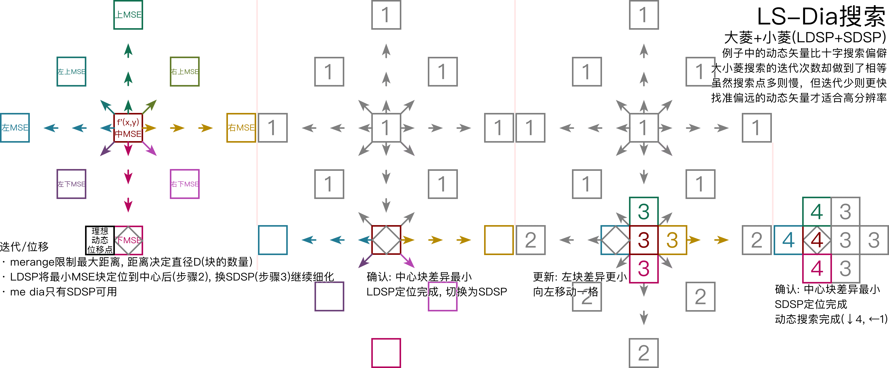
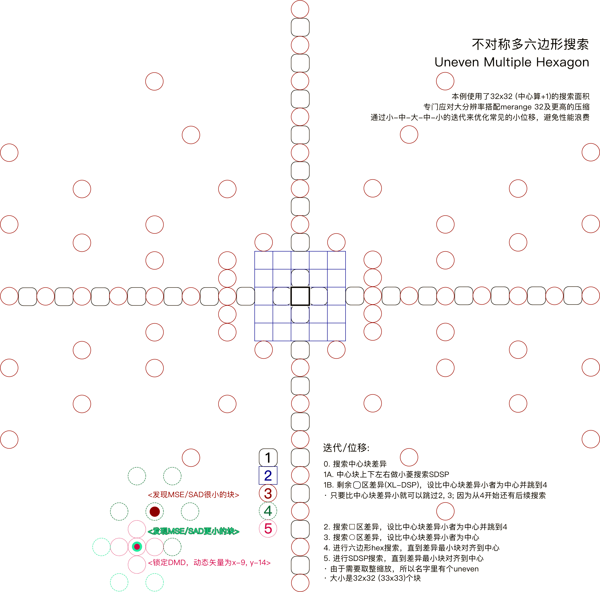
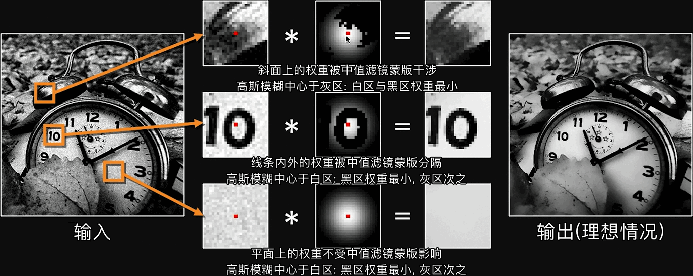
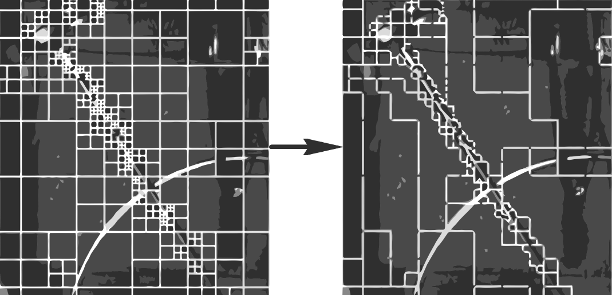
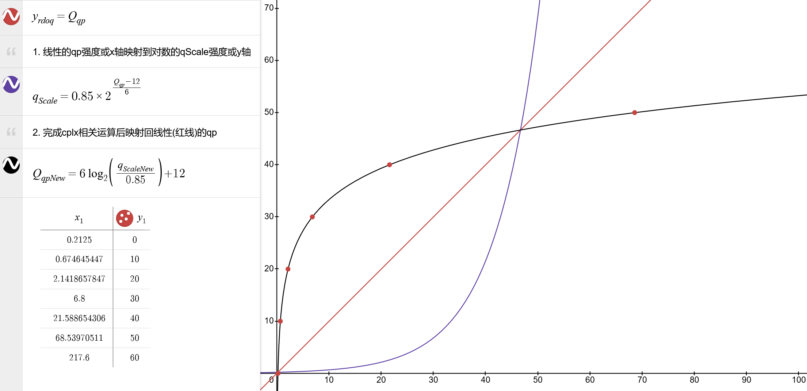
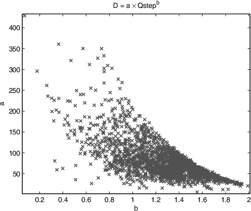

x265教程 HTML 完整版
欢迎阅读！若有什么不会的可以加群691892901。本教程仅算盲人摸象的业余分析，仅具备业余参考价值，入门先看x264视频压缩教程综合版。手头需要编码压制不妨搭配急用版教程
点击图片即可更改桌面和移动端的适配排版
ffmpeg，VapourSynth，avs2yuv 传递参数
- ffmpeg -i <源> -an -f yuv4mpegpipe -strict unofficial - | x265 --y4m - --output
- ffmpeg -i <源> -an -f rawvideo - | x265.exe --input-res <宽x高> --fps <整/小/分数> - --output
- -f格式，-an关音频，-strict unofficial关格式限制，--y4m对应"YUV for MPEG"，两个"-"是Unix pipe串流
- VSpipe 源.vpy --y4m - | x265.exe - --y4m --output
- avs2yuv 源.avs -csp<色> -depth<深> - | x265.exe --input-res <宽x高> --fps <整/小/分数> - --output
- avs2pipemod 源.avs -y4mp | x265.exe --y4m - --output
搜索 ffmpeg 支持的色度采样: |
ffmpeg -pix_fmts | findstr <或grep关键字> |
检查/选择色深，版本，编译: |
x265.exe -V，-D <8/10/12调整色深> |
多字体+艺术体+上下标 .ass 字幕渲染: |
ffmpeg -filter_complex "ass='F\:/字幕.ass'"滤镜 |
Linux Bash 报错导出: |
x265.exe [命令行] 2>&1 | tee home\[用户名]\Desktop\报错.txt |
Mac Terminal 报错导出: |
x265.exe [命令行] 2>&1 | tee User\[用户名]\Desktop\报错.txt |
Windows CMD 报错导出: |
x265.exe [命令行] 2> [桌面路径]\报错.txt |
分块
hevc中，帧下结构按面积大小分为帧 → 瓦 tile → 条带 slice → 条带分段 ss → ctu 树单元 → cu 单元.
cu，cb 由同帧的 ctu 经动态搜索ME与运动补偿MC隔离所得。其U/unit代表YCbCr整体块；B/block则单指Y，Cb或Cr块，区分亮度色度。ipcm-cu 代表跳过 MEMC，直达环路滤波的「帧内编码 pcm 波形 cu」intra pulse code modulation cu，因为“块”是一串像素值的波形，只是用元数据“换行”到二维而已。
图：Coding Tree Unit以及其下Coding Unit的划分
PU - 预测单元:
prediction unit 是编码完，用做参考源的块。支持cu上对称 rectangle，非对称asymmetric 划分，以更好的隔离动静态。亮度与色度上的分裂法可以不同，小至4x4像素。
图：pu的4种对称rectangular和4种不对称asymmetric划分
TU - 变换单元:
transformation unit 的划分与 CU 而非 PU 同步，实现变换和量化
AU - 存取单元:
access unit，解码端用于启动解码播放的块，一般为 IDR-AU
--ctu<64/32/16，默认64>编码树单元最大大小。大则有损压缩效率高，速度慢。一般建议保持默认，除非片有类似jpeg边缘损失的老片设32，分辨率特别小的老片设16
--min-cu-size<32/16，默认8>限制最小cu大小，简化计算步骤，因为使往后步骤pu，tu的划分也会更大。用多一点码率换取编码速度的参数。建议日常环境使用16或快速编码环境使用32
--rect --amp<开关，默认关，受limit-modes限制，amp需rect>限制最小cu大小，简化计算步骤，因为使往后步骤pu，tu的划分也会更大。用多一点码率换取编码速度的参数。建议日常环境使用16或快速编码环境使用32
变换
一维傅里叶变换 1D Fourier Transform
给出与原信号波形等高，从最长的频率周期开始不断缩窄（周期增加）并根据源信号调整相位的参考余弦。在参考余弦波变化的过程中，记下两条波形吻合度变化的曲线-不同波形周期的振幅，得频域信号。反过来将频域所对应的波形加回去就是逆变换。为将源波形中反相（上下颠倒）的余弦也考虑在内，所以计算过程含取立方转正。
「不断缩窄的参考余弦」可用
表示，以及复数用
表示，相位可记为
以及复数用
，表示频域点的亮度和位移（二维变换下是旋角）。
代表二轴坐标系统计一圈 360°（2π）的旋角，几何坐标系中同理的
超过180°（π）会归零而不用。详见desmos例1，desmos例2，3b1b视频科普以及Computer Vision 公开课。
二维傅里叶变换2D-FT
宽高上单拆出线来分别进行1DFT，通过双求和/双积分 ΣΣ/∫∫ 整合。在频域中相当于每个像素的变换结果相加或干涉。亮则振幅大，距中心远则频率高。强在可编辑性，可以消除打印喷头，抖动等均匀噪声。
二维离散余弦变换 2D Descrete Cosine Transform
用预制的二维波形模具，穷举加减列出各波形格子的使用次数，实现比2DFT更快的变换。
图：二维傅里叶变换的特性，背景特性以及可编辑性
--limit-tu<整数0~4默认关，需tu-intra/inter-depth大于1>提前退出tu分块，以量化/残差编码质量为代价提速。tu大则易出现量化涂抹，不利于暂停画质
· 1 一般，画质编码，取分裂/跳过中花费最小的
· 2 以同ctu内的首个tu分裂次数为上限
· 3 快速编码取帧内帧间附近tu分裂平均次数为上限
· 4 不推荐，将3作为未来tu的分裂上限，相比0+20%速度
--rdpenalty<整数0~2，默认关，需tu-intra-depth大于1>与limit-tu相反，强制tu分块细化以增加算力损耗并降低量化涂抹。可理解为tu分块的下限，例如高limit-tu，高crf时设2，避免32x32tu量化效果太强画面糊掉
· 1 提高率失真代价而减少32x32tu出现概率
· 2 强制32x32tu分块
· 32x32的帧内cu需tu-intra-depth 2
· 64x64帧内cu需tu-intra-depth 3
--tu-intra-depth --tu-inter-depth<整数1~4，默认1，配合limit-tu>空间域tu分裂次数上限,默认只在cu基础上分裂一次。决定量化质量所以建议开高，建议一般情况设2，保画质设3~4
--max-tu-size<32/16/8/4，默认32>大tu使压缩高而慢，以及瑕疵检测能力越差。码率换时间加画质。编码已有边缘损失的老片可搭配ctu 32与max-tu-size 16
帧间-动态搜索
逐块于帧间找最小失真朝向 Direction of minimal distortion / DMD，组成一张张帧间矢量表。缺则参考帧与分块的建立就不甚理想，损失可能的压缩率或画质。
图：传统的 Jain & Jain 十字搜索。
图：大小菱搜索。x264/5中，六边形搜索me hex将LDSP的上下左右斜8个外点减到6个，SDSP的细化规则不变。
图：umh搜索。
--analyze-src-pics<开关，默认关>允许动态搜索查找片源帧，耗时增加压缩
--me<hex/umh/star/esa/full，推荐umh>搜索算法，umh平衡，star四角星搜索之后收益递减，sea是优化过的x264 esa穷举，但收益递减仍大
--merange<整数，推荐4的倍数，需me>完全取决于ME算法和分辨率，过大会因「找不到更好，找到也是错」而损失画质和压缩
· 1920x1080下推荐48左右
· 3840x2160下推荐52左右
· me hex下设16
· me umh-star设≥32
--no-temporal-mvp<开关>关P-B条带的动态搜索，除直播外不推荐
--hme-search<hex/umh/star/esa/full，关me>三份异分辨率原画分别查找宏观到微观的搜索动态信息
--hme-range<三整数，需hme-search，推荐默认16,32,48>对应，和全分辨率三画面
帧间-子像素运动补偿
动态预测 ME 除了与帧内编码后的帧做差（以便推演P/B/I帧，见x264教程）以外，还被动态补偿 MC 以「允动画之移，拦静画所变」的原理消除如噪点之类导致的动态信息误判，同时将帧间矢量表中动态矢量的精度提高到 像素以修复「动态预测因精度低导致细节损失」的画面错误。
大体上，补偿过程是用帧内编码所得的“粗加工PU”与源视频对应的块做差，使用有限冲激响应滤镜 Finite impulse response (FIR) filter 放大。此处指 x264-6tap；x265-8tap，7tap 和 4tap 滤镜。放大后用 SATD 对准动态矢量，得“精加工PU”。
| 编码器 | 平面-块类型 | 范围精度 | 插值方法 |
|---|---|---|---|
| x264官方 | 亮度Y | ½像素（hpel） | 6tap FIR |
| x264官方 | 亮度Y | ¼像素（qpel） | 双线性插值（Bi-lerp） |
| x264官方 | 色度C | hpel+qpel | 上下左右加权平均 |
| x265官方 | 亮度Y | hpel+qpel | 上下左右加权平均 |
| x265官方 | 亮度Y | ¼像素（qpel） | 两种7tap FIR |
| x265官方 | 色度C | hpel+qpel | 4tap FIR |
表：x264/5实现h~qpel插值计算（实现了浮点→整数变量的程序优化）
图：此“子像素”特指是放大出的half-pixel(hpel) 像素，及quarter-pixel(qpel) 像素。
图：Y平面FIR插值和subme并行，调用8²或16²块的横/纵向参考源。若subme所得动态的:
- 向量横分量==0: [d][n]分别用7tapα或β采样整像素[A]
- 向量横分量!=0: [f][q]分别用7tapα或β采样子像素[b]
- 向量纵分量==0: [a][c]分别用7tapα或β采样整像素[A]
- 向量纵分量!=0: [i][k]用8tap分别采样子像素[a][c]
--subme<整数范围1~7，默认2>根据源帧率借下表判断。
注：x264的rdo选项和subme并用，所以与x265不通用；SATD算法见x264教程。
| 范围（率失真优化开） | 推荐 | hpel迭代 | hpel搜索 | qpel迭代 | qpel搜索 | 统计法 |
|---|---|---|---|---|---|---|
| 30fps | 3 | 2次 | 4方向 | 1次 | 4方向 | SATD |
| 48fps | 4 | 2次 | 4方向 | 2次 | 4方向 | SATD |
| 60fps | 5 | 1次 | 8方向 | 1次 | 8方向 | SATD |
| 90fps | 6 | 2次 | 8方向 | 1次 | 8方向 | SATD |
| ≥144fps | 7 | 2次 | 8方向 | 2次 | 8方向 | SATD |
加权预测 Weighted Prediction
解决淡入淡出 fade 过程中，部分 PU 因误参考，亮度变化不一的块失真问题；分为 P-B 条带用的显加权，和 B 条带用的隐加权。
- 显Explicit：原画和编码过的参考帧做差，差距越小权重越高
- 隐Implicit：用参考帧距离做加权平均插值，距离越近权重越高
--weightb<开关，默认关>启用B条带的隐加权预测。注意光线变化和淡入淡出在公开课，电脑录屏，低成本/旧动漫等片源中几乎不存在，这种情况下打开只会浪费性能
帧间-时域架网搜索
一维小波变换 1D Wavelet Transform
让短波像拉链一样划过一维信号，时间轴上根据短波波形选择，将与源信号匹配的程度变化记为频域信息（如使用低频-高频-低频的对称波形拆出音频热度图），支持更换波形以提取特征（如特征采样式音频降噪滤镜）。解决了傅里叶变换只有空间频域，无法描述信号随时间变化过程的原生缺陷，缺点是分辨率低。
基于提升式小波变换的时域动态补偿 lifting-scheme temporal MC
类似于 crf/abr 模式推演量化值中以 a-b 帧之差做复杂度累计。此处是用以预测 b-c 帧的差，而预测对的更新到低频L带，差错的更新到（不再参与下轮预测）的高频H带，得 0-1-2，2-3-4，4-5-6 等（prediction）帧以及其 H 带（update）构成第 0 层
继续在 L1→Ln 的1层向右迭代，分离出所有的 L，H 带，如此实现迭代 n 次即分离 2n 帧动静态，以及所有的预测与补偿，故不像传统动态搜索一样受缩放性 scalability（分辨率 vs 搜索范围）限制。是 Scalable Video Codec - SVC 编码的核心算法之一。
迭代后的高低频用 LL1 LL2 LH1 LH2 表示低到高频的顺序，字母位数代表迭代次数。
高斯模糊 Gaussian blur
利用正态分布函数面积不变的特性，通过设定偏差程度 σ 决定正态分布钟的梯度：σ 大则钟扁——滤镜中心分到的权重/面积越被更多分到权/面积的旁像素冲淡模糊掉，设计行业常用。见维基百科和Desmos互动例。
中值滤镜median filter
和卷积滤镜一样用n×n的滤镜格子逐像素扫图，区别在于滤镜中心会被替换为旁像素的中值。如此一来在扫描窗口任意两端几乎一致的像素值会被识别为线段或边缘，中间的像素值会被同化，而平面上的噪点/颗粒就会被抹除，生成仅有平/斜面和完整线条边缘的“模糊”结果。见维基百科。
双边滤镜bilateral filter
将中值滤镜输出作为（2D）高斯模糊的权重蒙版（通过矩阵点除实现动态干涉滤镜强度）；因此平面/斜面/线条本身会决定高斯模糊正态分布钟在对应位置被保留/干涉/隔断的程度

--mcstf<开关，默认关，会关多线程>时域动态补偿滤镜mctf搭配双阈滤镜的自动降噪，理论上提高细节保真。关多线程会大幅削弱性能
溯块向量搜索
与帧内编码并行给动态搜索提供溯块向量（cu帧内/帧间朝向以及大小）的步骤。由于移动的物件会跨越多个 PU ，所以将涉及同个移动物件的 PB 合到一起就能冗余一群 PB 的动态向量。x264/5 用 --ref 参数于时域上划区，逐 PU 创建 L0 和 L1 左右两排参考列表。x265 在 x264 --direct auto 的基础上添加了 AMVP 与 Merge mode 两个方案
高级动态向量搜索 Advanced Motion Vector Prediction
- 在帧内看当前 PU 左下的邻 PU，优先匹配向量往帧内指的邻 PU
- 参考向量指向其它帧的临 PU；并等比缩放，对齐到邻 PU 已按帧间差异对齐好的向量
- 若以上步骤没找到参选向量，就把同样的步骤于当前 PU 右上角进行一次
- 若应了如早批 PU 刚开始算，找不到参选向量的情况下就直接从时域搜索：
- 照帧间参考图像变化的内容差异做缩放调整，从右下角的相邻 PU 找参选
- 若仍不可用，就找当前 PU 中心位置的其它同位 PU；若最后没凑不齐两个参选向量，代入v=0,0
并和搜索模式 Merge Mode
然后用相对简单含糊算法接手剩余块的向量：从帧间，帧内凑五个参选块 candidate，两个备选，少服从多地并和动态向量。（该模式会跳过PU的边缘及当前向量以提速）

--max-merge<整数0~5，默认2>重设merge mode被选参考块的数量，时间换质量。建议高压编码设4，其它可设2，3
--early-skip<开关，默认关>先查2nx2n merge被选块，找不到就跳过AMVP以提速
初始化-Lookahead
最先运行，给视频帧分段并最终整合成 GOP 内树叉状的参考结构，设关键帧并递给下一步帧内编码。一来冗余，二来防止参考错误蔓延（否则丢一个网络数据包会导致长时间绿屏花屏）。过程见x264教程
--scenecut<整数，不推荐用>Lookahead中两帧差距达到该参数值则触发转场
--hist-scenecut<开关，默认关，会关scenecut，10与12bit源可能会导致崩溃，推荐8bit下用>亮度平面边缘+颜色直方图SAD阈值触发转场。x265 v3.5+69后编码彩色视频，尤其HDR源中超越scenecut精度~20%，降低了正误判（设I帧，closed-gop下帧间冗余效益降低）和负误判（不设I帧，分为多个带I块的P帧，帧内编码效益降低），因此除黑白视频外推荐。缺点是超过8bit后不稳定，且理论上不应对画质/压缩率有太大影响
注：hist-threshold参数于x265 v3.5+69被删
--rc-lookahead<帧数量，范围1~250，推荐keyint÷2>指定cutree的检索帧数，通常设在帧率的2.5~3倍。高则占用内存增加延迟，低则降低压缩率和平均画质。
注：cutree会自动选择--rc-lookahead和max(--keyint,max(--vbv-maxrate,--bitrate)÷--vbv-bufsize×fps)中最小的值作为检索帧数
--no-cutree<开关>关闭少见CTU量化增强偏移。可能只有近无损，crf小于16才用的到
P/B帧推演-Viterbi最短路径算法
：见x264教程
--b-adapt<整数0~2，推荐2>0停用，1快速算法，因当今设备算力够高所以一律2
--bframe-bias<整数-90~100，推荐默认>设立B帧判定偏移，增大的同时搭配低pbratio可增加B帧数量，用负值搭配高pbratio可以减少B帧数量
网络抽象层单元-参数集
Network abstraction layer unit 中含解码配置 profile，level 的数据包。x264 中的视频帧数即 sps->vui.i_num_units_in_tick 或 sps->vui.i_time_scale÷2 所得（÷1则为分行交错视频）
- 视频参数集video parameter set
- 序列参数集sequence parameter set——-分枝-负责播放时间戳，显加权与其它特定解码要求
- 图参数集picture parameter set————分枝-负责解码信息
- 条带段slice segment—————————分枝-负责防止ctu中的错误传播到整个条带，ctu以上最小的单位
--opt-qp-pps --opt-ref-list-length-pps<开关，默认关，已知兼容性问题>据上个GOP改动当前PPS中默认的qp/ref参数值，从而整体上优化视频数据结构。尽管符合HEVC标准，但部分解码端，包括视频网站都不这么想
注：兼容性问题为应该用hev1而非hvc1封装进ISO-BMFF
--repeat-headers<开关, 默认关>在流未封装的情况下提供SPS，PPS等信息，正常播放HEVC源码
注：封装文件的科普见x264教程
流媒体缓冲缓存
视音频在开始播放前预先加载到内存的一段缓冲区。只要存入缓冲区的波动不大就能保证播放在很多条件下的流畅性。视频流则以确保网络设施正常和控制视频码率本身做到流畅
Videl Buffer Verifier - 基于缓冲条件的量化控制
手动指定网络/设备下所允许的缓冲速度 kbps 以加大量化压缩，控制 CRF/ABR 模式。与 CRF 一并使用时叫可变码率 Variable Bitrate / VBR 模式。使用时应注意 VBV 完全不理画质，而卡顿的原因可能仅仅是因为 app 客户端的缓存设太小了。
--vbv-bufsize<整数kbps，默认关=0，小于maxrate>编码器解出原画后，最多可占的缓存每秒。bufsize÷maxrate=播放时解码出每gop原画帧数的缓冲用时（秒）。值的大小相对于编完GOP平均大小。编码器用到是因为模式决策要解码出每个压缩步骤中的内容与原画作对比用
--vbv-maxrate<整数kbps，默认关0>峰值红线。用「出缓帧码率-入缓帧码率必≤maxrate"」限制编码器在GOP码率超bufsize，即缓存跑满时压缩超载帧（提高qp值+强降噪至码率合规为止）。当入缓帧较小时，出缓帧就算超maxrate也会因缓存有空而不被压缩。所以有四种状态，需经验判断：
· 大：GOP大小=bufsize=2×maxrate，超限后等缓存满再压，避开多数涨落，适合限平均率的串流
· 小：GOP大小=bufsize=1×maxrate，超码率限制后直接压，避开部分涨落，适合限峰值的串流
· 超：GOP大小<bufsize=1~2×maxrate，超码率限制后直接压，但因视频小/crf大所以没啥作用
· 欠：GOP大小>bufsize=1~2×maxrate，超码率限制后直接压，但因视频大/crf小所以全都糊掉
· 由于gop多样，4种状态常会出现在同一视频中。buf/max实际控制了这些状态的出现概率
--crf-max<整数0~51>防止vbv把crf拉太高，但会导致码率失控
关键帧
IDR刷新解码帧 instant decoder refresh
- 自身储存完整图片，但同时还负责GOP间划界分段，播完令解码器清理前GOP缓存的大写I帧
- 清缓存是为了防止参考/内存错误传播，错误可能源自硬件/软件/网络/干扰等
RAP随机访问点 random access point
- “访问”代表播出画面前获取数据的过程
- “任意”代表拖进度条，打开直播，使进度条上任意一点都要正常解码的目的，增加码率提升体验
CRA/DRA净/脏任意访问 clean/dirty random access
- open-gop状态下指定包括GOP间划界，GOP内帧间参考，自身储存完整图片的i帧
- 附近的rasl/radl帧与之相对应
- 「脏」指一组含i块的P帧，需要全部解码才能重建出i帧。压缩更高但相比i帧的解码更容易糊（脏）
BLA断链访问帧 broken link access
- open-gop间划界，访问不相关/不相连GOP的特殊CRA帧。用于不暂停播放的分辨率切换
no-open-gop<开关，默认关，建议开>不用cra/bla，增加码率增加兼容性，适合长GOP策略
--keyint<整数，默认25>判断新发现的转场距上个IDR帧的距离是否短于此值。有两种设定逻辑，而它们给出的画质都一样：
· 设5或更高，省了设立一些IDR帧拖慢速度。快速编码/直播环境直接设=keyint
· 设1来增加IDR帧，一帧被判做转场本来就意味着前后溯块的价值不高。而P/B帧内可以放置I宏块，x264/5倾向插P/B帧。好处是进度条落点在激烈的动作场面更密集
--fades<开关，默认关>找流中的虚实渐变fade-in，给小到帧间条带，大到整个帧间范围改用I条带，并根据渐变后最亮的帧重设码率控制历史记录，解决转场致模糊的问题
注：与weightb殊路同归但效果更强，增加码率更多
参考帧
RASL 任访略前导，RADL 任仿解前导 random access skipping/decoding lead
- 打开直播或用户拖动进度条落在CRA附近，找不到I帧时指定应该解码decode还是略过skip的标签P帧
--ref<整数1~16，推荐fps÷100+3.4>向量溯块前后帧数半径，一图流设1. 要在能溯全所有块的情况下降低参考面积，所以一般设3就不管了
--radl<整数默认0，小于连续B帧，推荐2~3>原理见上
--ipratio --pbratio<浮点,默认1.4 1.3>P帧比IDR/I，及B/b帧相比P帧的量化值递增。B帧双向参考能从更多帧中找到参考源，因此量化强度理应最高：
· 真人录像片源中保持默认
· 动漫片源中连续长B帧出现几率增多，有时会找不到合适的参考源导致画质损失，用1.2或更小分配一定码率
· 可据比例换算帧类型的qp，如I-qp17，P-qp20，B-qp22即--qp/crf 17 --ipratio 1.1765 --pbratio 1.1
--bframes<整数0~16>最多可连续插入的B帧数量：
· 一般录像/录屏快速，以及视频剪辑素材设3~6以防止录制和剪辑的解码算力要求过高
· 电影片源快速设8左右
· 低成本动画片源，或播放设备配置或硬解兼容高的话可设在13左右
注：bframes大于8，同时keyint大于250会大增内存占用，但也取决于视频分辨率
帧内编码
组成参考源（I帧）+参考帧的帧间结构后，数据会集中到 I帧/ I块上。故先使用单图无损压缩——补偿参考源，平滑（3-tap/ss），和编码 PB（趋平/夹角/DC）三步。补偿解决 PB 位于边角，或等不到其它 CB 编码完成而缺失的参考源；平滑预处理即根据情况，选择 3-tap FIR 或强力平滑滤镜，卷积插值出「纯预测 PU」
以下图预测块 C 为例：缺编码块B处的参考源就用编码块 A 的最右存在参考源做副本，并如法炮制编码块 D 补充 A-B 两块参考源的逻辑；EDAB 四编码块皆缺，则拿编码块 F 的顶部参考源替代；否则参考源皆填像素中值
图：补充参考源的检查顺序。
强力平滑滤镜的启用条件
- 预测块 C 的大小小于 32x32
- 底-中-顶，及左-中-右三个纵/横向参考源两两差之和小于视频位深，如 8bit 下为 8
- 非 DC，非平行（夹角 10），非垂直（夹角 26）的帧内编码模式
图：强力平滑滤镜的启用条件。
强力平滑滤镜 Strong intra smoothing
- 从横-纵向两个参考点直接线性插值 lerp 出所有参考点，以及所对应的预测像素 p
- 缓解了色带问题
图：强力平滑滤镜。
3-tap 有限冲击响应 Finite Impulse Reponse 滤镜
用横向 与纵向 各3像素加权平均得预测像素 p，按卷积顺序轮询得到 PU
图：3tap FIR滤镜。
预处理后，用趋平，夹角，或 DC 模式初步编码 PB 到 CB。
趋平模式Planar
用双线性插值 Bi-lerp，让左-上过渡为右-下平面。由底β×高α+底α×高β=h×底γ的关系得过渡线 ， 再做一遍得过渡线 ； 取平均得预测像素 。
图：得到一个平均预测像素p(x,y)的过程。
夹角模式 Direct（35种）
将渐变（斜面）PB 无损压缩为编码块 CB 中全部画面与参考源共角的夹角 拓补结构。通过穷举所有 的夹角以尝试对齐上方横向参考源 ，或左侧纵向参考源 中差异最小的点 或纵向的 构成直角三角。用三角函数 得预测像素 的夹角 。图：35种共角夹角模式。

图：大体的精确夹角测算。见Elecard参考书
量化
：见x264教程
率控制-算出量化值 Quantization Parameter
人眼对明暗变化与画面细节程度的感知呈对数㏒状，分别奠定了显示器的伽马曲线映射，以及量化值qp（x轴）到强度qScale（y轴）的强度映射。图：量化值qp到qScale的映射，见desmos互动例；伽马矫正的科普见x264教程，ArtLEDs科普。
由于当前帧此时还未编码（码率未知），故寻已编码前帧的量化失真程度（越高则后帧理应越复杂），做推演复杂度/模糊复杂度。CRF 越高则除进推演复杂度的分母越大/ABR 越低则分子越小，得到的推演复杂度越低，推演出的 qp 就越高。
| cplxSum | 一直于当前与上帧帧间做差并累积 总差异先减半一次再添加新的差异程度 |
|
|---|---|---|
| cplxCount | 初始为零，用于逐帧加权 cplxBlur 的帧数计 ÷2 与 cplxSum 同步 加权逻辑时越往后参考冗余理应越多的规律 |
|
| cplxBlur | 模糊复杂度。据帧所处推演加权的新 SATD 近似 100% 则当前帧复杂度推高（涨势复杂度） 可扭转 cplxCount 默认的跌势 |
|
| qScale | GOP 内累计的直线化 qp，或率失真优化量化的拉格朗日值 λ 已编码帧的 qp 转 qScale，便于其它参数修改更新 |
|
| ABR_rate_factor | GOP 初始值，ABR 下的 qScale（rdoqλ）转 qp | |
| ABR_qScaleNew | 据 ABR 控制更新一遍 qScale（rdoqλ） | |
| cplxBase | 常数/恒定值。CRF 模式默认的复杂度 若用 B 帧编码则 CTU 或宏块数量×120, 否则×80 |
|
| CRF_rate_factor | GOP 内累计，经 cutree，B 帧偏移乘进 qScale 后得到 1-qcomp 与 CRF_qScale 对齐 （仅 cplxBase，cplxBlur运算） |
|
| CRF_qScaleNew | 据 crf_rate_factor 更新当前帧的 qScale（rdoqλ） | |
| qp | qScale（rdoqλ）经调整后得到当前帧的量化值 qp 各 qp 对应一套 DCT 变换量化矩阵。qp→qStep 见x264教程 |
表：分别以[L-1]和[L]表示上帧和当前帧
经此实现了帧内画面复杂则 qp 低，简则高；同时据用户设定的（对数）强度的动态变化。这种质量判断只有两帧而不宏观，所以引出了各种各样的优化步骤，如 mb/cutree，rdoq 等。
CRF 上层模式
--crf<浮点范围0~51，默认23>据cplxBlur，cutree，B帧偏移给每帧分配各自 qp 的固定目标质量模式，或简称质量呼应码率模式，统称crf。素材级画质设在16~18，收藏~高压画质设在19~20.5，YouTube是23。由于动画和录像的内容差距，动画比录像要给低点。理论上crf高=量化损失多→率失真优化慢；但测试出来是crf+2则4k 4:4:4 12bit会快~0.5fps
--qpmin<整数0~51>由于画质和优质参考帧呈正比，所以仅高压环境建议设最高14
--qpmax<整数0~51>在要用到颜色键，颜色替换等需要清晰物件边缘的滤镜时，可以设26防止录屏时物件的边缘被压缩的太厉害，其他情况永远不如关cu/mbtree
--qcomp<开关，tune grain时开启>通过cplxBlur抑制qp判断被噪声带偏，胶片颗粒片源用
--cplxblur<浮点0~100，默认20>第-1帧不存在，无法算出第0帧的cplxBlur所以直接指定
ABR 上层模式
编码器自行判断量化程度，尝试压缩到用户定义的平均码率average bitrate上，速度最快
--bitrate<整数kbps>平均码率。若视频易压缩且码率给高，就会得到码率比设定的片子；反过来低了会不照顾画质强行提高量化，使码率达标。如果给太低则会得到码率不达标，同时画质差的片子。平均码率模式，除2pass分隔，一般推流用的"码率选项"就是这个参数，速度快但同时妥协了压缩
SBRC 下层模式-可搭配 CRF/ABR/CRF-VBR/ABR-VBR
分段式率控制 Segment based rate control，实现DASH，M3U8串流（视频平台）用。
--sbrc<开关，需min-keyint=keyint，no-open-gop>由于提高了初始CRF值的利用率，所以建议搭配--cplxblur=crf使用
CQP 双层模式
--qp<整数0~69，禁用crf/abr+模式决策+率失真优化>直接设定全局量化强度。影响其后的综合画质下降或码率暴涨，所以除非yuv4:4:4情况下有既定目的，都不建议
2pass-ABR 双层模式
先用 CRF 模式分析整个视频总结可压缩信息，后根据 ABR 模式的码率限制统一分配量化值。有 pass 2 给特别高的平均码率，输出最小损失的最小体积近无损模式，以及 pass2 给码率硬限的全局整体压缩模式
--pass 1<挡位，导出stats数据文件>；--pass 2<挡位，导入stats数据文件>；--stats<路径，默认在x264/5目录下>
--slow-firstpass<开关>pass1 里不用 fast-intra no-rect no-amp early-skip ref 1 max-merge 1 me dia subme 2 rd 2，或者手动覆盖掉
Analysis-2pass-ABR 双层模式
于普通 2pass 基础上让 pass1 的帧内帧间分析结果给到 pass2。
--analysis-save --analysis-load<路径>指定导入/出analysis信息文件的路径，文件名
--analysis-save-reuse-level --analysis-load-reuse-level<整数1~10，默认5>指定analysis-save和load的信息量，配合pass1的动态搜索，帧内搜索，参考帧等参数。推荐8
· 1储存lookahead信息
· 2==4同时储存帧内/帧间向量格式+参考信息
· 5==6加rect/amp分块信息
· 7加8x8cu分块优化信息
· 8==9加完整8x8cu分块信息
· 10加所有cu分析信息
--dynamic-refine<开关，默认关>自动调整refine-inter，x265官方建议搭配refine-intra 4用，相比手动设定提高了压缩
--refine-inter<整数0~3，默认0>限制帧间块的向量格式，取决于pass1分析结果是否可信，如pass 1只跑了快速搜索的情况
· 0完全遵从pass1的分块深度和向量格式
· 1分析所有pass2中与pass1相同分块的向量格式，除2pass中比1pass更大的分块
· 2一旦找出最佳的动态向量格式就应用于全部的块，2Nx2N块的rect/amp分块全部遵从pass1，仅对merge和2Nx2N划分的块的动态向量信息进行分析
· 3保持使用pass1的分块程度，仍然搜索向量格式
--refine-intra<整数0~3，默认0>限制帧间块的向量格式，取决于pass1分析结果是否可信，如pass 1只跑了快速搜索的情况
· 0~2同上
· 3保持使用pass1的分块程度，但优化动态向量
· 4pass1丢弃不用
--refine-mv<整数1~3>优化分辨率变化情况下pass2的最优动态向量，1仅搜索动态向量周围的动态，2增加搜索AMVP的顶级候选块，3再搜索更多AMVP候选
--scale-factor<整数1~3>优化分辨率变化情况下pass2的最优动态向量，1仅搜索动态向量周围的动态，2增加搜索AMVP的顶级候选块，3再搜索更多AMVP候选
--refine-mv-type avc读取API调用的动态信息，目前支持avc大小，使用analyse-reuse模块就用这个参数+avc
--refine-ctu-distortion<整数0~1>pass 1下用0写，pass 2下用1读取ctu失真信息
2pass 转场优化
--scenecut-aware-qp<整数，默认关，仅pass2>降低转场前/后qp以增加转场画质，类似fades和weightb
· 1仅转前
· 2仅转后
· 3前加后
--analysis-reuse-file<路径，默认x265目录下x265_analysis.dat>若使用了2pass-ABR调优，则导入multi-pass-opt-analysis/distortion信息的路径，文件名
--masking-strength<逗号分隔整数>于sct-awr-qp基础上定制qp偏移量。建议根据低~高成本动漫，真人录像三种情况定制参数值。scenecut-aware-qp的三种方向决定了masking-strength的三种方向。所谓的非参考帧就是参考参考帧的帧，包括B，b，P三种帧
· sct-awr-qp=1时写作<转前毫秒（推500）>,<参考±qp>,<非参±qp>
· sct-awr-qp=2时写作<转后毫秒（荐500）>,<参考±qp>,<非参±qp>
· sct-awr-qp=3时写作<转前毫秒>,<参考±qp>,<非参±qp>,<转后毫秒>,<参考±qp>,<非参±qp>
注：x265 v3.5移除了scenecut-window，max-qp-delta，qe-delta-ref，qp-delta-nonref
Analysis-Npass 间调优
在Analysis-pass1~2之间加一步优化计算。实现比普通2pass更精细的码率控制，1~N也行
--multi-pass-opt-analysis<开关，默认生成x265_analysis.dat，需关闭pme/pmode/analysis-save|load>储存/导入每个CTU的参考帧/分块/向量等信息。将信息优化，细化并省去多余计算
--multi-pass-opt-distortion<开关，需关闭pme/pmode/analysis-save|load>根据失真（编码前后画面差）进一步分析qp
--multi-pass-opt-rps<开关，默认关>将pass1常用的率参数集保存在序列参数集SPS里以加速
Analysis-pass2-ABR 天梯模式
--abr-ladder<文件名.txt，苹果TN2224，实验性>码器内部实现analysis模式2pass abr多规格压制输出。方便平台布置多分辨率版本用。可以把不变参数写进pass1+2，变化的写进txt。
格式为："[压制名:analysis-load-reuse-level:analysis-load] <参数1+输出文件名1>"
例：
x265.exe --abr-ladder 1440p8000_2160p11000_2160p16000.txt --fps 59.94 --input-dep例th 8 --input-csp i420 --min-keyint 60 --keyint 60 --no-open-gop --cutree
1440p8kb_2160p11kb_2160p16kb.txt {
[1440p:8:Anld存档1] --input 视频.yuv --input-res 2560x1440 --bitrate 8000 --ssim --psnr --csv 9.csv --csv-log-level 2 --output 1.hevc --scale-factor 2
[2160p1:0:nil] --input 视频.yuv --input-res 3840x2160 --bitrate 11000 --ssim --psnr --csv 10.csv --csv-log-level 2 --output 2.hevc --scale-factor 2
[2160p2:10:Anld存档3] --input视频.yuv --input-res 3840x2160 --bitrate 16000 --ssim --psnr --csv 11.csv --csv-log-level 2 --output 3.hevc --scale-factor 0 }
近无损与真无损压缩双层模式
--lossless<开关>过分块，动/帧/参搜索，量/自适量化等影响画质的步骤，保留率失真优化以增强参考性能。输出体积特大的原画。相比锁定量化方法，这样更能满足影业与科研用，但不适合个人和一般媒体。真无损导出有很小几率因为参考质量提升而会比近无损小
--tskip<开关，默认关，需rd大于2>4x4 tu上跳过DCT变换，可保留深度分块/纹理密集处的放大细节
--cu-lossless<开关，默认关>将无损量化cu（qp 4）作为率失真优化的结果选项之一，只要码率管够（符合λ=R/D）就不量化。用更多码率换取原画相似度，无损源能提高参考冗余
自适应量化
CRF/ABR设定每帧量化/qp后，方差自适应量化variance adaptive quantizer再根据复杂度判断高低频信号，来实现精确到宏块的qp分配过程。讨论时注意aq与vaq的混淆。见x264教程
--aq-mode<整数0~3>据原画和crf/abr设定，以及码率不足时（crf<18/低码abr）如何分配qp
· 1标准自适应量化（急用，简单平面）
· 2加启用aq-variance，自动调整aq-strength强度（录像-电影以及crf<17推荐）
· 3加码率不够用时倾向保暗场（接受更明显的涂抹失真）
· 4加码率不够用时更加倾向保纹理（接受平面上的涂抹失真，实验性，很慢）
--aq-strength<浮点>自适应量化强度。搭配aq-mode，如动漫1:0.8，2:0.9，3:0.7用。录像上可加0.1~0.2，画面混乱/观众难以注意平面时可再增加。注意低成本动漫的平面居多，因此码率不足时反而要妥协纹理
--hevc-aq<开关>以¼tile而非aq的边缘高频信息实现自适应。据doom9结论1，2: hevc-aq比aq 4快且适合动漫，而aq 4更适合录播。目前学术方-官方-第三方间信息较割裂，暂无适解
--aq-motion<开关，实验性>据动态信息微调自适应量化的效果mode和强度strength
--qg-size<64/32/16/8，默认64，≥min-cu-size>偏移蓝，红色色度面相比亮度平面的qp值差异，负值降低量化。如当色度平面的量化太高则可以用这两个参数补偿回来，但x264-5会根据色度平面采样格式（4:2:2，4:4:4）自动设定这些参数。由于编码器一直不擅长深红色，而人眼又对红光敏感，所以可以给红色面设-3左右
--cbqpoffs --crqpoffs<整数>据动态信息微调自适应量化的效果mode和强度strength
x265 jpsdr-mod 参数
--aq-auto<8bit四开关十进制，默认0关>对应下表：
| 值 | 逐帧aq | 延迟逐帧aq(hysteresis) | HDR兼容 | aq-mode 5 |
|---|---|---|---|---|
| 1 | √ | |||
| 2,3 | √ | √ | ||
| 4 | √ | √ | ||
| 8 | √ | √ | ||
| 6 | √ | √ | √ | |
| 10 | √ | √ | √ | |
| 12 | √ | √ | √ | |
| 14 | √ | √ | √ | √ |
-aq-fast-edge<开关，需aq-mode4,5>边缘检测跳过高斯模糊过滤，不适合脏片源
--aq-bias-strength<浮点，默认1，需aq-mode3,5>aq-strength偏给暗场的程度
--aq-strength-edge<浮点0~3，默认=aq-strength，需aq-mode4,5>偏给纹理的aq-strength
--aq-bias-strength-edge<浮点，默认=aq-bias-str，需aq-mode5>aq-strength-edge偏给暗场的程度
模式决策
Mode decision 整合搜来的信息，宏观地定制分块参考量化等细分方案。因为码率最小的压缩方案画质也差。注意片源含明显边缘失真时反而要减少决策优化
--rd<1/2/3/5，默认3，大则慢>据优化模式决策的程度。 建议快速用1，2；高压用3；片源数据无损(非视觉无损)时用5
· 1优化帧内参考，并块/跳过决策，含明显边缘失真时用
· 2加分块决策，含明显边缘失真时用
· 3加帧间决策，高压高量化时可平衡
· 5==6加向量/帧间方向预测决策，比3慢一倍，片源含边缘失真时会强化失真
--limit-modes<开关>用附近的4个子CU以判断用merge还是AMVP，会大幅减少rect/amp的效果，提速明显。会增大或减少体积，微降画质但难以察觉
--limit-refs<整数0~3，默认3>限制分块用信息可参考性。0不限压缩高且慢；1用cu分裂后的信息+差异信息描述自身(推荐)；2据单个cb的差异信息建立pu；3=1+2
--rskip<整数0~2>前cu分块被跳过时，判断后cu接着搜索分块还是提前退出的参数。画面越接近录屏/低成本动漫就用得越多
· 0继续分析。适合信噪比差/高噪源。原画很干净则不如1
· 1rd0~4下据临cu是否细分而定；rd5~6下看附近2Nx2N cu分块难度而定，高压和一般情况推荐
· 2直接对比cu纹理密度edge density，快且不比前者差，但存在对源的画质要求及客观判断“画质”的能力
--tskip-fast<开关，默认关>跳过4x4 tu的变换，忽略部分DCT系子coefficients来加速，CbCr-tu也取决于Y块是否被跳过。在全屏小细节的视频中有显著加速效果。建议除高压以外的情况使用
--rskip-edge-threshold<0~100，默认5: 趋向于分块，需rskip大于1>用Sobel算法获取cu纹理密度再除以块所占面积的百分比。纹理密度>阈值=分块，量化强度越高越关键。8×8或16×16块下默认5%（即含3或12个系子）就分
注：类似x264 deadzone参数
· 像素风：据像素变大的程度决定。如分辨率宽÷2，分辨率高÷2会回到1x1像素大小，则使默认值乘以2以提速
· 抗涂抹：rskip 2 rskip-edge-threshold 3。即“有一点不平就应分块”。比rskip 0快，用于已知要保留雪景等全屏大量动态信息的源的情况下，节省传统分块计算时间。可=在不添噪点的情况下达成抗涂抹的目的
图：影响DCT系子分布的块中像素，而DCT系子的密度影响rskip-edge-threshold的设置
率失真优化控制
率失真优化 Rate distortion optimization
多个码率下测得的 cu 失真，挑出 R-D 曲线下的平衡区间。由代价函数开销=失真+λ·码率： 实现模式决策。
失真 D 用差异平方和 SSE 或总差异 SAD 判断（SSE多取一步平方，使较大的差异呈指数增长）进而分到更多补偿的码率。拉格朗日值λ源于 qp，即 crf，abr 指定的率失真斜率 slope 区间。qp 越大斜度越小：
- 则无斜度，则代价等于失真——码率变而画质不变，宜压缩。
- λ趋0则开销趋失真——适当压缩就不会影响画质
- λ>0则开销>失真——保画质收益大于压缩收益，应该保画质
图：率失真优化中λ的斜度变化与效果
图：率-失真表格中不断调整并得到“×”的实际效果